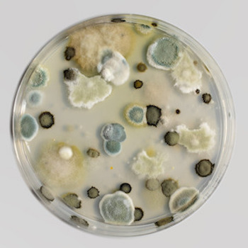
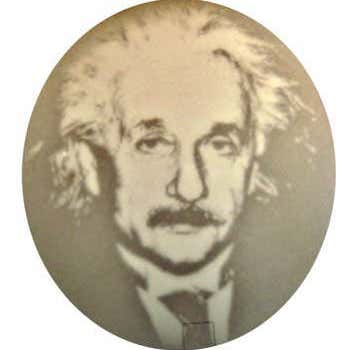
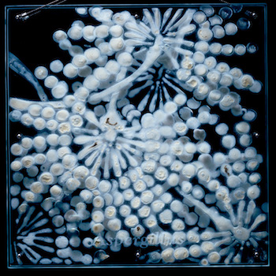

Kathleen Ryan's Bad Fruit series uses precious and semi-precious stones like malachite, opal, and smoky quartz to form the simulacrum of common green rot on each fruit. Working at a larger-than-life scale, each fruit is made out of a foam base, painted, and each stone is individually placed and glued. She says "The sculptures are beautiful and pleasurable, but there’s an ugliness and unease that comes with them."

{kind=link}
Antoine Bridier-Nahmias explores the impressive diversity of textural and color qualities that mold exhibits. Magical Contamination was a two year project of documenting and archiving mold in petri dishes and posting them onto a Tumblr blog.

Silas Inoue's mold series explores the aesthetics and lifespans of mold through the establishment of it's ideal living conditions. These blocks contain mold on wood hermetically sealed by acrylic glass. Inoue gives "artistic authorship to the organisms" beause of their unpredictability and invasive properties.

Daniele del Nero claims: "My purpose is to talk about the sense of time and destiny of the planet after the human species, through the sense of restlessness which abandoned buildings are able to communicate" when describing her After Effects series. Each architectural scale model is made from black paper and then covered with flour and set in an environment that would spur the development of mold.

Using agar, a gelatinous-like substance to fill the petri dish, Maria Penil Cobo creates a canvas where the microbes can be collected, spread around like paint and allowed to grow. She creates different scenes such as bio-scapes, nature-scapes, and sea-scapes. Her work can also be found on the Bacterial Art website.

The Polluted Popsicles project was created by students Hung I-chen, Guo Yi-hui, and Cheng Yu-ti from the National Taiwan University of the Arts help to help visualize environmental damage. By taking 100 different water samples from various locations in Tawain, each frozen water form has obvious variation ranging in color, trash, and bacterias.

{kind=link}
Researchers Brian Landry and Ravi Sheth developed the Bactograph. Bacterial “photographs” are created using genetically modified bacteria that make pigment when exposed to light. They designed a kit that is free of charge and can be sent to high school classrooms, universities, and museums for people to make their own portraits.

{kind=link}
Stacy Levy's Mold Garden entails enlarged images of bread and fruit mold are sandblasted onto glass. Each of the carved-out areas become miniature petri dishes that are filled with growth medium and inoculate with mold spores. Finally, Mold grows on the glass creating a double portrait of the fungus: in this single work, mold appears as both life-sized and hugely magnified.

Lizan Freijsen is fascinated by fungi and our attempt to ban molds and moisture spots from our everyday environment. Traces of decay find their way back inside also as interior objects, in order to remind us of what we tend not to see. By turning moisture stains into textiles, she focuses on these blind spots and visualizes their beauty like with her Fungi Carpet in Zomersneeuw.
{kind=link}
As an extension of the studio’s ongoing research in fibers and textile compositions, Dana Barnes presents an installation of sculptural seating at collective design fair during new york design week 2015. the design of Endolith Casts references the form, palette and materiality of lichen growth — a composite organism most commonly known for their unbounded growth on bare rock, walls and exposed soil surfaces.

Madge Evers creates mushroom spore print images titled 'Iterations' made with repeating patterns from a single mushroom. The marks can offer familial similarities with slight variations or leave ghost-like traces. All images in this series were made with Stropharia rugoso-annulata, an edible species she cultivates in her garden.
{kind=link}
C.L. Frost photographs everyday objects and creates digital collages. On his Flickr page you can view an archive of his abstracted photographs from molded food like bread, cream cheese, sandwiches, inside of eggs, etc.

Micro Cosmos by Polona Tratnik confronts the spectator with the everyday environment, in which everyone comes in contact with their body and microorganisms. A bathroom was set up in a gallery space. It was first sterilized, then optimum living conditions were established – growth medium, moisture, oxygen. The microorganisms from the artist’s body were transmitted to the surfaces of the bathroom furniture and into the water.

Dutch textile designer Aniela Hoitink has created a dress using disc-shaped pieces of mushroom mycelium, which she believes will "change the way we use textiles". The modules also allow for easy repair of the garment without interfering with the look of the fabric. The material's biodegradable properties mean it can be composted when no longer needed. The mycelium dress is also apart of the Fungal Futures exhibition, which celebrates sustainable design thanks to fungi.

Phil Ross grew building blocks from the fungus Ganoderma lucidum. To make his structure Mycotecture, bags of sawdust are steam cooked for several hours in airtight bags, after which mushroom tissue is introduced into the bag, feeding on, digesting, and transforming the wood. The bricks are composed of the mushroom’s below-ground root-like network (mycelia), which makes them stronger, pound-for-pound, than concrete.

Current student at RISD, Sara Park's work speculates the futures of footwear and food design, biodesign, sustainability, and community-based collaborative projects. While a lot of their work revolves around the the growth of the natural world, they have also created digital iterations of those aspects like these digital posters appreciating germs.
×
<
>